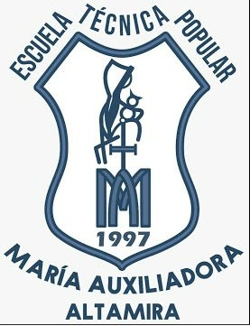
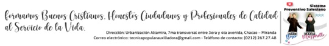

Encuentra tu camino en Salud o Economía Social
"El único modo de hacer un gran trabajo es amar lo que haces. Tu futuro profesional empieza con la decisión que tomas hoy."
Este test interactivo te guiará para conocer cuál de nuestras menciones técnicas se conecta mejor con tu personalidad, habilidades y metas. ¡Comencemos!
Este número de cédula ya completó su prueba. Por favor, comunícate con tu orientador o docente si necesitas consultar tus resultados.

Estudiante:
Cédula:
Edad: años
Sección:
Fecha de Evaluación: